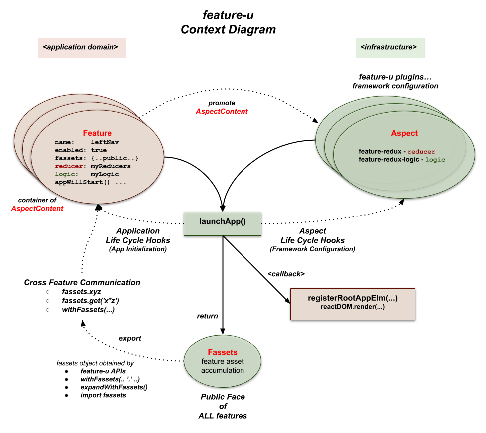

A Closer Look
As previously mentioned, the basic process of feature-u is that
each feature promotes a Feature object that calalogs
various aspects of that feature ... things like: the feature's name,
it's Public Face, whether it is enabled, initialization constructs, and
resources used to configure it's slice of the frameworks in use.
In turn, these Feature objects are supplied to launchApp(),
which configures and starts your application, returning an
Fassets object (which promotes the Public Face of each
feature).
Let's take a closer look at this process ...

aspects
In feature-u, "aspect" is a generalized term used to refer to the various ingredients that (when combined) constitute your application. Aspects can take on many different forms ... for example:
- UI Components and Routes,
- State Management (actions, reducers, selectors),
- Business Logic,
- Startup Initialization Code,
- etc.
Not all aspects are of interest to feature-u ... only those that are needed to setup and launch the app ... all others are considered to be an internal implementation detail of the feature. As an example, consider the redux state manager: while it uses actions, reducers, and selectors ... only reducers are needed to setup and configure redux.
feature-u provides a base set of built-in aspects (out-of-the-box) but allows additional aspects to be introduced through it's extendable API.
-
These aspects are promoted directly by the base feature-u package. They provide very rudimentary capabilities, such as feature enablement, Public Face, and application life-cycle hooks.
-
These aspects are promoted by external packages (or self defined in your project). They provide feature-u integration with other frameworks (for example
reduxstate management, orredux-logicbusiness logic, or navigational routers, etc.). They are created with feature-u's extendable API, and are packaged separately, so as to not introduce unwanted dependencies.
Feature Object (relaying aspect content)
The Feature object is merely a lightweight container that
holds AspectContent of interest to feature-u.
Each feature within an application promotes a Feature object (using
createFeature()) which catalogs the aspects of that feature.
Ultimately, all Feature objects are consumed by launchApp().
Feature content are simple key/value pairs (the key being an Aspect.name with values of AspectContent). These aspects can either be built-in (from core feature-u), or extensions.
Here is an example:
export default createFeature({
name: 'featureA', // builtin aspect (name must be unique across all features within app)
enabled: true, // builtin aspect enabling/disabling feature
fassets: { // builtin aspect promoting Public Face - Cross Feature Communication
define: {
'api.openA': () => ...,
'api.closeA': () => ...,
},
},
appWillStart: (...) => ..., // builtin aspect (Application Life Cycle Hook)
appDidStart: (...) => ..., // ditto
reducer: ..., // feature redux reducer (extended aspect from the feature-redux plugin)
logic: ..., // feature logic modules (extended aspect from the feature-redux-logic plugin)
});
Built-In aspects
Built-in aspects are promoted directly by the base feature-u package. They provide very rudimentary capabilities, such as feature enablement, Public Face, and application life-cycle hooks.
Like all aspects, Built-In aspect content is relayed through Feature
object properties (via createFeature()).
Feature.nameA string property which represents the identity of the feature. Feature names are guaranteed to be unique. Application code can also use
Feature Namein various single-source-of-truth operations.
Feature.enabledA boolean property that determines whether the feature is enabled or not. This indicator is typically based on a dynamic expression, allowing packaged code to be dynamically enabled/disabled at run-time (please refer to:
Feature Enablement).
-
An optional aspect that promotes feature assets used in
Cross Feature Communication(i.e. the Public Face of a feature).fassetsdirectives can both define resources, and/or declare a resource contract (the intention to use a set of fasset resources). Resources are accumulated across all features, and exposed through theFassets object, and thewithFassets()HoC. For more information, please seeFeature.fassets aspect.
-
An optional
Application Life Cycle Hookinvoked one time, just before the app starts up. This life-cycle hook can do any type of initialization, and/or optionally supplement the app's top-level content (using a non-null return) (please refer to:appWillStart()).
-
An optional
Application Life Cycle Hookinvoked one time, immediately after the app has started. Because the app is up-and-running at this time, you have access to the appState and the dispatch() function ... assuming you are using redux (when detected by feature-u's plugable aspects) (please refer to:appDidStart()).
Extendable aspects
feature-u is extendable! Extendable Aspects provide feature-u
integration with other frameworks (for example redux
state management, or redux-logic business logic, etc.).
For this reason (by in large) they provide the most value,
because they fully integrate your features into your run-time
stack!
Extendable Aspects are packaged separately from feature-u, so as to not introduce unwanted dependencies (because not everyone uses the same frameworks). You pick and choose them based on the framework(s) used in your project (matching your project's run-time stack).
Extendable Aspects are created with feature-u's
Extension API, using createAspect(). You can
define your own Aspect (if the one you need doesn't already exist)!
For more information, please see Extending feature-u.
Like all aspects, Extendable Aspect content is relayed through Feature
object properties (via createFeature()).
Because Extendable Aspects are not part of the base feature-u
package, it is a bit problematic to discuss them here (they are
either in a separate npm package, or self contained in your project).
You should search the npm registry with the 'feature-u' keyword
to find the ones that meet your requirements. With that said, we
will briefly discuss the Extendable Aspects that were created in
conjunction with the initial development of feature-u (just to give
you a feel of what is possible).
Feature.reducervia:feature-reduxfeature-reduxis the feature-u integration point toredux!It configures
reduxthrough thereducerAspect(to be supplied tolaunchApp()), which extends the Feature object, adding support for theFeature.reducerproperty, referencing feature-based reducers.Only reducers are of interest because that is all that is needed to configure [redux]. All other redux items (actions, selectors, etc.) are considered to be an internal implementation detail of the feature.
The
Feature.reducercontent must be embellished byslicedReducer(), which provides instructions on how to combine multiple feature-based reducers in constructing the overall top-level application state tree.Because feature-redux manages redux, it also provides an integration hook to other Aspects that need to inject redux middleware.
Please refer to the
feature-reduxdocumentation for complete details.
Feature.logicvia:feature-redux-logicfeature-redux-logicis the feature-u integration point toredux-logic!It configures
redux-logicthrough thelogicAspect(to be supplied tolaunchApp()), which extends the Feature object, adding support for theFeature.logicproperty, referencing feature-based logic modules.The following article is an introduction (and motivation) for the development of redux-logic: Where do I put my business logic in a React-Redux application.
Please refer to the
feature-redux-logicdocumentation for complete details.
Feature.routevia:feature-routerfeature-routeris the feature-u integration point to Feature Routes!It configures Feature Router through the
routeAspect(to be supplied tolaunchApp()), which extends the Feature object, adding support for theFeature.routeproperty, referencing routes defined through thefeatureRoute()function.Feature Routes are based on a very simple concept: allow the application state to drive the routes! It operates through a series of registered functional callback hooks, which determine the active screen based on an analysis of the the overall appState. This is particularly useful in feature-based routing, because each feature can promote their own UI components in an encapsulated and autonomous way! Because of this, feature-router is a preferred routing solution for feature-u.
Feature Routes is the recommended solution for feature-based navigation. You can find more information in the
Feature Based Routessection.Please refer to the
feature-routerdocumentation for complete details.
Launching Your Application
By interpreting the set of Aspects and Features that comprise an application, feature-u can actually coordinate the launch of your application (i.e. start it running)!
This is accomplished through the launchApp() function.
It manages the setup and configuration of the frameworks in use, such as
redux,redux-logic, etc. This is based on a set of supplied plugable Aspects that extend feature-u, integrating external frameworks to match your specific run-time stack.It facilitates application life-cycle hooks on the
Featureobject, allowing features to manage things like: initialization and injecting root UI elements, etc.It creates and promotes the
Fassets objectwhich contains the Public Face of all features, facilitating a cross-communication between features.
As a result, your application mainline is very simple and generic.
There is no real app-specific code in it ... not even any global
initialization! That is because each feature can inject their own
app-specific constructs!! The mainline merely accumulates the
Aspects and Features, and starts the app by invoking launchApp():
src/app.js
import React from 'react';
import ReactDOM from 'react-dom';
import {launchApp} from 'feature-u';
import {createReducerAspect} from 'feature-redux'; // *1*
import {createLogicAspect} from 'feature-redux-logic'; // *1*
import {createRouteAspect} from 'feature-router'; // *1*
import features from './features'; // *2*
import SplashScreen from './util/comp/SplashScreen';
// launch our app, exposing the feature-u Fassets object (facilitating cross-feature-communication)!
export default launchApp({ // *4*
aspects: appAspects(), // *1*
features, // *2*
registerRootAppElm(rootAppElm) { // *3*
ReactDOM.render(rootAppElm,
getElementById('myAppRoot'));
}
});
// accumulate/configure the Aspect plugins matching our app's run-time stack
function appAspects() {
// define our framework run-time stack
const reducerAspect = createReducerAspect(); // *1*
const logicAspect = createLogicAspect(); // *1*
const routeAspect = createRouteAspect(); // *1*
const aspects = [ // *1*
reducerAspect, // redux ... extending: Feature.reducer
logicAspect, // redux-logic ... extending: Feature.logic
routeAspect, // Feature Routes ... extending: Feature.route
];
// configure Aspects (as needed)
// ... StateRouter fallback screen (when no routes are in effect)
routeAspect.config.fallbackElm$ = <SplashScreen msg="I'm trying to think but it hurts!"/>;
// beam me up Scotty :-)
return aspects;
}
The Aspect collection (see *1* in the code snippet above) reflects
the frameworks of our run-time stack (in our example
redux, redux-logic, and
feature-router ) and extend the acceptable Feature
properties (Feature.reducer, Feature.logic, and Feature.route
respectively) ... see: Extendable aspects.
In this case, all our Aspects were pulled from external npm packages,
however you can define your own using createAspect().
All of our supplied app features are accumulated from the features/
directory ... (see *2* in the code snippet above).
Export fassets
The Fassets object (emitted from launchApp())
promotes the accumulated Public Face of all features. This is the
basis of Cross Feature Communication.
By feature-u decree, this object should be exported (see *4*
in the code snippet above), providing import access to other modules.
SideBar: In reality there are several ways to access the
fassets object (depending on the context), import is just one
(see: Obtaining fassets object).
You can find more information about the Fassets object in
Cross Feature Communication.
React Registration
The launchApp() function uses a
registerRootAppElm() callback (see *3* in the code
snippet above) to catalog the supplied rootAppElm to the specific
React platform in use.
API: registerRootAppElm(rootAppElm, fassets): void
NOTE regarding the rootAppElm:
Typically the supplied
rootAppElmwill have definition, based on the Aspects and Features that are in use. In this case, it is the responsibility of this callback to register this content in some way (either directly or indirectly).However, there are atypical isolated cases where the supplied
rootAppElmcan be null. This can happen when the app chooses NOT to use Aspects/Features that inject any UI content. In this case, the callback is free to register it's own content.
Because this registration is accomplished by your app-specific code, feature-u can operate in any of the React platforms, such as:
React Web
import ReactDOM from 'react-dom';
...
export default launchApp({
aspects,
features,
registerRootAppElm(rootAppElm) { // *3*
ReactDOM.render(rootAppElm,
getElementById('myAppRoot'));
}
});
React Native
import {AppRegistry} from 'react-native';
...
export default launchApp({
aspects,
features,
registerRootAppElm(rootAppElm) { // *3*
AppRegistry.registerComponent('myAppKey',
()=>rootAppElm); // convert rootAppElm to a React Component
}
});
Expo
import Expo from 'expo';
...
export default launchApp({
aspects,
features,
registerRootAppElm(rootAppElm) { // *3*
Expo.registerRootComponent(()=>rootAppElm); // convert rootAppElm to a React Component
}
});